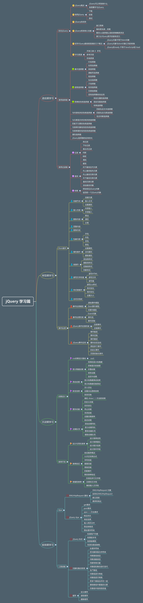
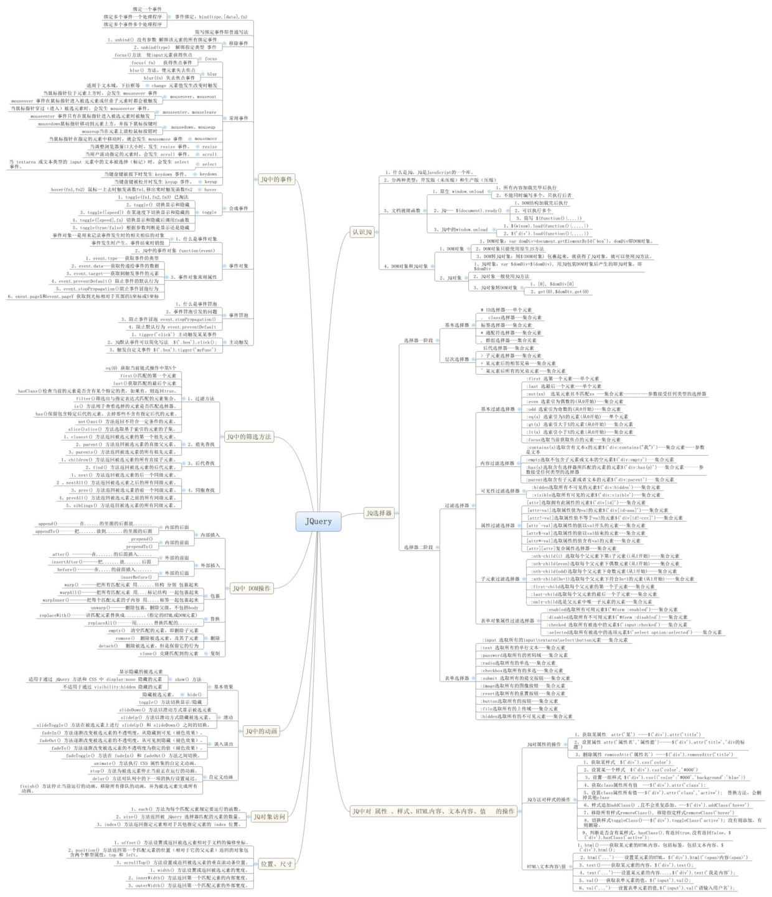

jQuery系统学习思路


jQuery概述
jQuery is a fast, small, and feature-rich JavaScript library. It makes things like HTML document traversal and manipulation, event handling, animation, and Ajax much simpler with an easy-to-use API that works across a multitude of browsers. With a combination of versatility and extensibility, jQuery has changed the way that millions of people write JavaScript.
- jQuery能做什么
- 轻量级/体积小/使用灵巧
- 强大的选择器
- 出色的DOM封装操作
- 出色的浏览器兼容性
- 可靠的事件处理机制
- 完善的Ajax
- 链式操作，隐身迭代
- 方便的选择页面元素（借鉴css选择器，更精确，更灵活）
- 动态更改页面样式/页面内容（操作DOM/动态添加和移除样式）
- 控制响应事件（动态添加响应事件）
- 提供基本网页特效（提供已封装的网页特效方法）
- 快速实现通信（Ajax）
- 易扩展/插件丰富
安装
- 下载jQuery，本地引用
Production version - 用于实际的网站中，已被精简和压缩。
Development version - 用于测试和开发（未压缩，是可读的代码） 替代方案
如果您不希望下载并存放 jQuery，那么也可以通过 CDN（内容分发网络） 引用它。
谷歌和微软的服务器都存有 jQuery 。提示：使用谷歌或微软的 jQuery，有一个很大的优势：
许多用户在访问其他站点时，已经从谷歌或微软加载过 jQuery。所有结果是，当他们访问您的站点时，会从缓存中加载 jQuery，这样可以减少加载时间。同时，大多数 CDN 都可以确保当用户向其请求文件时，会从离用户最近的服务器上返回响应，这样也可以提高加载速度
- 下载jQuery，本地引用
如何使用
1234567$(document).ready(function(){// TODO})or$(function(){// TODO})window.onload()和$(document).ready()对比
| | window.onload | $(document).ready() |
|:–|:—–|:———-|
|执行时机| 必须等网页中所有内容加载完后(图片)才执行 |网页中的DOM结构绘制完后就执行,可能DOM元素相关的东西并没有加载完|
|编写个数| 不能同时执行多个 |能同时执行多个|
|简化写法| 无 |$(document).ready(function(){ //.. });推荐写法：$(function(){ });|- API
- 选择器
- ID选择器：document.getElementById(id)和$(“#id”)
- 标签选择器：document.getElementByTagName(tagName)和$(‘tagName’):返回标签数组
- 类选择器：$(‘.class’)：返回多个.class的元素
- 通配选择器：document.getElementByTagName(““)和$(‘‘):所有的标签元素
- 组选择器：$(“selector1 selector2 selector3”) 无数量限制
- 事件
- 效果
- DOM操作
DOM是一种与浏览器、平台|语言无关的接口，使用该接口可以轻松的访问 页面中的所有的标准组件- DOM CORE
DOM core并不专属于JavaScript，任何支持DOM的程序都可以使用
JavaScript 中的getElementByID() getElementsByTagName() getAttribute() setAttribute()等方法都是DOM Core的组成部分 - HTML -DOM
HTML -DOM的出现比DOM-Core还要早，它提供一些更简明的标志来描述HTML元素的属性
比如：使用HTML-DOM来获取某元素的src属性的方法 - CSS -DOM
针对CSS的操作。在JavaScript中，主要用于获取和设置style对象的各种属性，通过改变style对象的属性，使网页呈现不同的效果
- DOM CORE
- 属性
- CSS
- AJAX
Asynchronous Javascript And XML （异步的
JavaScript和XML）- 优势
优秀的用户体验（不刷新整个页面更新数据）
提高web程序的性能
与传统模式相比，Ajax模式在性能上最大的区别在于传输数据的方式，在传统模式中，数据的提交时通过表单来实现的。Ajax模式只是通过XMLHttpRequest对象向服务器提交希望提交的数据，即按需发送
减轻服务器和带宽的负担
Ajax的工作原理相当于在用户和服务器之间加了一个中间层，似用户操作与服务器响应异步化。它在客户端创建Ajax引擎，把传统方式下的一些服务器负担的工作转移到客户端，便于客户端资源来处理，减轻服务器和带宽的负担 - 不足
浏览器对XMLHttpRequest对象的支持度不足
破坏浏览器前进、后退按钮的正常功能
对搜索引擎的支持的不足
开发和调试工具的缺乏 - jQuery中的Ajax [补充部分–来自锋利的jQuery]
jquery对Ajax操作进行了封装，在jquery中的$.ajax()方法属于最底层的方法，第2层是load()、$.get()、$.post();第3层是$.getScript()、$.getJSON()，第2层使用频率很高
- 优势
- 遍历
- 数据
- DOM元素
- 核心
- 选择器
插件
滚动固定在某个位置
jQuery图片滚动插件全能版
jQuery Wookmark Load 瀑布流布局
jQuery Jcrop 图像裁剪
jQuery kxbdMarquee 无缝滚动
jQuery lightBox 灯箱效果
Lazy Load Plugin for jQuery
自己整理的一份插件库
jQuery官方提供的插件开发模板1234567891011121314;(function($){$.fn.plugin=function(options){var defaults = {//各种参数 各种属性}var options = $.extend(defaults,options);this.each(function(){//实现功能的代码});return this;}})(jQuery);jQuery性能优化
- 使用最新的jQuery库
- 使用合适的选择器来定位元素
- 使用jQuery选择器获取的结果是一个jQuery对象。在性能方面，建议使用for或while循环来处理，而不是$.each()
- 也许你之前使用+来拼接字符串，现在可以改了。使用join()方法确实有助于性能优化，尤其是长字符串处理的时候
- 合理使用HTML5和Data属性
- 尽量使用原生的JavaScript方法
- 压缩JavaScript代码 一方面使用Gzip；另一方面去除JavaScript文件里面的注释、空白
常用jQuery代码片段
禁用页面的右键菜单
12345$(document).ready(functuion(){$(document).bind("contextmenu",function(e){return false;});});新窗口打开页面
1234567891011$(document).ready(function(){//例子1：href="http://"的链接将会在新窗口打开链接$('a[href=^="http://"]').attr("target","_blank");//例子2：rel="external"的超链接将会在新窗口打开链接$("a[rel$='external']").click(function(){this.target = "_blank";});});//use<a href="http://baidu.com" rel="external">open</a>判断浏览器类型
1234567891011121314151617181920212223242526272829303132$(document).reday(function(){//Firefox2 and aboveif( $.browser.mozilla && $.browser.version>="1.8"){//do something}// Safariif($.browser.safari){//do something}// Chromeif($.browser.chrome){//do something}// Operaif($.browser.opera){//do something}})// IE6 and blowif($.browser.msie && $.browser.version<=6){//do something}// anything above IE6if($.browser.msie && $.browser.version > 6){//do something}输入框文字获取和失去焦点
1234567891011121314151617$(document).ready(function(){$("input.text1").val("Enter you search text here");textFill($('input.text1'));});function textFill(input){//input focus text functionvar originvalue = input.val();input.focus(funtion(){if($.trim(input.val())== originvalue){input.val(' ');}}).blur(function(){if($.trim(input.val()) == ' '){input.val(originalvalue);}})}获取鼠标位置
12345$(document).ready(function(){$(document).mousemove(function(e){$("#XY").html("X:" + e.pageX+ "| Y" + e.pageY);});});判断元素是否存在
12345$(document).ready(function(){if($("#id").length){// do some thing}})点击div也可以跳转
1234567$("div").click(function(){window.location = $(this).find("a").attr("href");})//use<div><a href="index.html">home</a></div>设置div在屏幕中央
1234567891011$(document).ready(function(){jQuery.fn.center = function(){this.css("position","absolute");this.css("top",($(window).height() - this.lenght()) / 2 +$(window).scrollTop() + "px");this.css("left",($(window).height() - this.lenght()) / 2 +$(window).scrollLeft() + "px");return this;}//use$("#XY").center();});关闭所有动画效果
123$(document).ready(function(){jQuery.fx.off = true;});检测鼠标的右键和左键
12345$(document).ready(function(){$("#xy").mousedown(function(e){alert(e.which);//1 = 鼠标左键 2= 鼠标中间 3 = 鼠标右键});});回车提交表单
1234567$(document).ready(function(){$("input").keyup(function(e){if(e.which == "13"){alert("回车提交");}})});设置全局的Ajax参数
12345678$("#load").ajaxStart(function(){showLoading();//显示loadingdisableButtons() //禁用按钮})$("#load").ajaxComplete(function(){hideLoading();//隐藏loadingenableButtons();//启用按钮})获取选中的下拉框
12$("#someElement").find('option:selected');$("#someElement option:selected");切换复选框
12345var tog = false;$("button").click(function(){$("input[type=checkbox]').attr("checked",!tog);tog = !tog;});个性化链接
12345$(document).ready(function(){$("a[href$='pdf']").addClass("pdf");$("a[href$='zip']").addClass("zip");$("a[href$='psd']").addClass("psd");});在一段时间后自动隐藏或关闭元素
123456setTimeOut(function(){$("div").fadeIn(400);},3000);//而在1.4之后的版本可以用delay()来实现$("div").slideUp(300).delay(3000).fadeIn(400);使用事件代理绑定元素
123456789101112131415161718//为table里面的td元素绑定click事件，不管td是一直存在还是动态创建的//jQuery 1.4.2之前使用这种方式$("table").each(function(){$("td",this).live("click",function(){$(this).toggleClass("hover");});});//jquery 1.4.2使用的方式$("table").delegate("td","click",function(){$(this).toggleClass("hover");});//jQuery1.7.1使用的方式$("table").on("click","td",function(){$(this).toggleClass("hover");})预加载图片
123456789101112(function($) {var cache = [];// Arguments are image paths relative to the current page.$.preLoadImages = function() {var args_len = arguments.length;for (var i = args_len; i--;) {var cacheImage = document.createElement('img');cacheImage.src = arguments[i];cache.push(cacheImage);}}jQuery.preLoadImages("image1.gif", "/path/to/image2.png");让页面中的每个元素都适合在移动设备上展示
1234567891011var scr = document.createElement('script');scr.setAttribute('src', 'https://ajax.googleapis.com/ajax/libs/jquery/1.5.2/jquery.min.js');document.body.appendChild(scr);scr.onload = function(){$('div').attr('class', '').attr('id', '').css({'margin' : 0,'padding' : 0,'width': '100%','clear':'both'});};图像等比例缩放
1234567891011121314151617181920212223242526$(window).bind("load", function() {// IMAGE RESIZE$('#product_cat_list img').each(function() {var maxWidth = 120;var maxHeight = 120;var ratio = 0;var width = $(this).width();var height = $(this).height();if(width > maxWidth){ratio = maxWidth / width;$(this).css("width", maxWidth);$(this).css("height", height * ratio);height = height * ratio;}var width = $(this).width();var height = $(this).height();if(height > maxHeight){ratio = maxHeight / height;$(this).css("height", maxHeight);$(this).css("width", width * ratio);width = width * ratio;}});//$("#contentpage img").show();// IMAGE RESIZE});返回页面顶部
12345678// Back To Top$(document).ready(function(){$('.top').click(function() {$(document).scrollTo(0,500);});});//Create a link defined with the class .top<a href="#" class="top">Back To Top</a>使用jQuery打造手风琴式的折叠效果
1234567891011121314151617181920212223var accordion = {init: function(){var $container = $('#accordion');$container.find('li:not(:first) .details').hide();$container.find('li:first').addClass('active');$container.on('click','li a',function(e){e.preventDefault();var $this = $(this).parents('li');if($this.hasClass('active')){if($('.details').is(':visible')) {$this.find('.details').slideUp();} else {$this.find('.details').slideDown();}} else {$container.find('li.active .details').slideUp();$container.find('li').removeClass('active');$this.addClass('active');$this.find('.details').slideDown();}});}};使用jQuery和Ajax自动填充选择框
12345678910111213$(function(){$("select#ctlJob").change(function(){$.getJSON("/select.php",{id: $(this).val(), ajax: 'true'}, function(j){var options = '';for (var i = 0; i < j.length; i++) {options += '' + j[i].optionDisplay + '';}$("select#ctlPerson").html(options);})})})自动替换丢失的图片
12345678// Safe Snippet$("img").error(function () {$(this).unbind("error").attr("src", "missing_image.gif");});// Persistent Snipper$("img").error(function () {$(this).attr("src", "missing_image.gif");});预防对表单进行多次提交
123456789101112131415$(document).ready(function() {$('form').submit(function() {if(typeof jQuery.data(this, "disabledOnSubmit") == 'undefined') {jQuery.data(this, "disabledOnSubmit", { submited: true });$('input[type=submit], input[type=button]', this).each(function() {$(this).attr("disabled", "disabled");});return true;}else{return false;}});});动态添加表单元素
12345//change event on password1 field to prompt new input$('#password1').change(function() {//dynamically create new input and insert after password1$("#password1").append("");});在窗口滚动时自动加载内容
123456789101112131415161718var loading = false;$(window).scroll(function(){if((($(window).scrollTop()+$(window).height())+250)>=$(document).height()){if(loading == false){loading = true;$('#loadingbar').css("display","block");$.get("load.php?start="+$('#loaded_max').val(), function(loaded){$('body').append(loaded);$('#loaded_max').val(parseInt($('#loaded_max').val())+50);$('#loadingbar').css("display","none");loading = false;});}}});$(document).ready(function() {$('#loaded_max').val(50);});导航菜单背景切换效果
1234567891011121314<ul id='nav'><li>导航一</li><li>导航二</li><li>导航三</li></ul>//注意：代码需要修饰完善$('#nav').click(function(e) {// 要知道siblings的使用$(e.target).addClass('tclass').siblings('.tclass').removeClass('tclass');;});解决jQuery, prototype共存，$全局变量冲突问题
12345<script src="prototype.js"></script><script src="http://blogbeta.blueidea.com/jquery.js"></script><script type="text/javascript"> jQuery.noConflict();</script>注意：一定要先引入prototype.js 再引入jquery.js，先后顺序不可错jQuery 判断元素上是否绑定了事件
12345//jQuery event封装支持判断元素上是否绑定了事件，此方法只适用于jQuery绑定的事件var $events = $("#foo").data("events");if( $events && $events["click"] ){//your code}如何正确地使用toggleClass
12345//切换（toggle）类允许你根据某个类的//是否存在来添加或是删除该类。//这种情况下有些开发者使用：a.hasClass('blueButton') ? a.removeClass('blueButton') : a.addClass('blueButton');//toggleClass允许你使用下面的语句来很容易地做到这一点a.toggleClass('blueButton');如何设置IE特有的功能
123if ($.browser.msie) {// Internet Explorer就是个虐待狂}如何验证某个元素是否为空
12345678// 方法一if (! $('#keks').html()) {//什么都没有找到;}// 方法二if ($('#keks').is(":empty")) {//什么都没有找到;}访问IFrame里的元素
123var iFrameDOM = $("iframe#someID").contents();//然后，就可以通过find方法来遍历获取iFrame中的元素了iFrameDOM.find(".message").slideUp();管理搜索框的值
1234567$("#searchbox") .focus(function(){$(this).val('')}) .blur(function(){var $this = $(this);// '请搜索...'为搜索框默认值($this.val() === '')? $this.val('请搜索...') : null;});部分页面加载更新
1234setInterval(function() {//每隔5秒钟刷新页面内容 //获取的内容将增加到 id为content的元素后$("#content").load(url); }, 5000);采配置JQuery与其它库的兼容性
12345678//方法一： 为JQuery重新命名为$jvar $j = jQuery.noConflict();$j('#id').... //方法二： 推荐使用的方式(function($){ $(document).ready(function(){//这儿，你可以正常的使用JQuery语法 });})(jQuery);测试密码的强度
在某些网站注册时常常会要求设置密码，网站也会根据输入密码的字符特点给出相应的提示，如密码过短、强度差、强度中等、强度强等。这又是怎么实现的呢？看下面代码1<input type="password" name="pass" id="pass" /> <span id="passstrength"></span>1234567891011121314151617181920212223242526//下面的正则表达式建议各位收藏哦，项目上有可能会用得着$('#pass').keyup(function(e) {//密码为八位及以上并且字母数字特殊字符三项都包括var strongRegex = new RegExp("^(?=.{8,})(?=.*[A-Z])(?=.*[a-z])(?=.*[0-9])(?=.*\\W).*$", "g");//密码为七位及以上并且字母、数字、特殊字符三项中有两项，强度是中等var mediumRegex = new RegExp("^(?=.{7,})(((?=.*[A-Z])(?=.*[a-z]))|((?=.*[A-Z])(?=.*[0-9]))|((?=.*[a-z])(?=.*[0-9]))).*$", "g");var enoughRegex = new RegExp("(?=.{6,}).*", "g");if (false == enoughRegex.test($(this).val())) {$('#passstrength').html('More Characters'); }else if (strongRegex.test($(this).val())) {$('#passstrength').className = 'ok';$('#passstrength').html('Strong!'); }else if (mediumRegex.test($(this).val())) {$('#passstrength').className = 'alert';$('#passstrength').html('Medium!'); }else {$('#passstrength').className = 'error';$('#passstrength').html('Weak!');}return true;});
常见CDN加速服务
Bootstrap中文网开源项目免费 CDN 服务
百度静态资源公共库
360网站卫士常用前端公共库CDN服务–已停止服务
开放静态文件 CDN
微软CDN服务
阿里云
百度开放云平台
jQuery CDN
jQuery cdn加速
新浪CDN- jQuery的一些资源
jQuery API 中文文档–css88
jQuery API 中文文档–jquery123.com
jQuery API 3.1 中文文档
jQuery-overapi
在线桌面版API
更多详情—一份实用的API参考手册集合 - 扩展阅读
jQuery源码分析系列